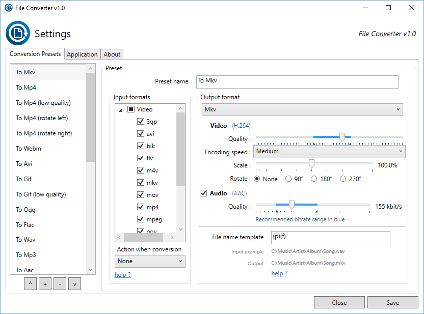

Description
File Converter is a very simple tool which allows you to convert and compress one or several file(s) using the context menu in windows explorer. And it's FREE!

The interface is designed to be as light as possible to keep the application pleasant to use.
It supports a lot of different file formats:
| Supported output formats | Compatible input formats | |
|---|---|---|
| Audio | flac, aac, ogg, mp3, wav | 3gp, aiff, ape, avi, bik, cda, flac, flv, m4a, mkv, mov, mp3, mp4, oga, ogg, wav, webm, wma, wmv |
| Video | webm, mkv, mp4, ogv, avi, gif | 3gp, avi, bik, flv, gif, m4v, mkv, mp4, mpeg, mov, ogv, webm, wmv |
| Image | png, jpg, ico, webp | bmp, exr, ico, jpg, jpeg, png, psd, svg, tiff, tga, webp, pdf, doc*, docx*, odt*, odp*, ods*, ppt*, pptx*, xls*, xlsx* | Document | doc*, docx*, odt*, odp*, ods*, ppt*, pptx*, xls*, xlsx*, bmp, exr, ico, jpg, jpeg, png, psd, svg, tiff, tga |
* You need to have Microsoft Office installed and activated in order to convert Office documents.
You can heavily customize the application in order to add / remove conversion presets in the files context menus or edit the existing one to change the conversion options.
If you want more informations about the features offered in File Converter, visit the documentation page.
I hope this application will help you :)
It is open source (GLP v3), free and without any adds so you just have to enjoy it!
Donate
File Converter is a personal open source project started in 2014. I have put hundreds of hours developping, refining and tuning File Converter with the goal of making the conversion and compression of files an easy task for everyone.
You can help me by contributing to the project, by making a donation or just by saying thanks :).
Troubleshooting
If you encounter any problem with File Converter, you can:
- See the already known problems in the troubleshooting section of the documentation.
- Or report an issue on the bug tracker.
When you report an issue, please join the following informations:
- Registry.xml
- Settings.user.xml
- The Diagnostics folder of the session that encountered the issue.
- A screenshot (if possible) and a description that shows/explain the issue.
You will find the xml files and diagnostics folder in c:\Users\[UserName]\AppData\Local\FileConverter\.
Downloads
File Converter is compatible with Windows Vista / 7 / 8 and 10.
Windows 64 bits installer: FileConverter-1.2.3-x64-setup.msi (~39 Mo)
Windows 32 bits installer: FileConverter-1.2.3-x86-setup.msi (~38 Mo)
Sources (C#/WPF project): FileConverter-v1.2.3.tar.gz (~40 Mo)